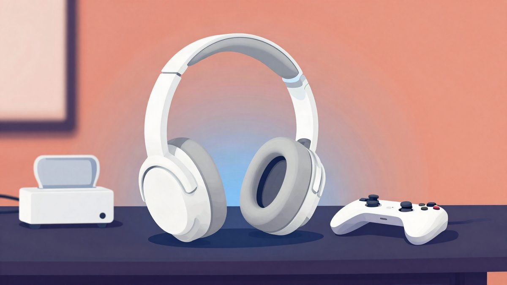

Sony PlayStation Pulse: bežične slušalice s planarnim magnetskim driverima za 99,99 dolara

Sony je predstavio slušalice PlayStation Pulse s planarnim magnetskim driverima, koje istodobno podržavaju Sonyjevu vlastitu bežičnu tehnologiju i Bluetooth. U SAD-u koštaju 99,99 dolara (oko 90 eura), što je najniža Sonyjeva cijena za slušalice s takvim driverima. Cijena i dostupnost u Europi još nisu poznati.
Sony je predstavio nove bežične slušalice PlayStation Pulse s custom planarnim magnetskim driverima. U SAD-u koštaju 99,99 dolara (oko 90 eura), a dolaze u bijeloj i crnoj boji. The Verge u recenziji piše da nude vrlo dobar zvuk i taman dovoljno dodatnih funkcija za tu cijenu.
Planarni magnetski driveri nisu novost u Sonyjevoj ponudi, prvi takav proizvod izašao je 2023. godine. Pulse je, međutim, najpristupačniji među njima. Zvuk je čist i detaljan u igrama i u glazbi. Bas nije pretjeran, a visoki tonovi nisu oštri. Zadani equalizer je ugodan i dinamičan, a podešava se u sučelju PS5 konzole, kao i kod drugih Pulse slušalica.
Povezivanje
Pulse istodobno prima zvuk preko PlayStation Linka (Sonyjeve bežične veze s niskom latencijom i bez gubitka kvalitete) i preko Bluetootha. U kutiji je USB-C Link dongle koji se spaja na PS5, PC ili Nintendo Switch 2. Uz PlayStation Portal slušalice se spajaju izravno, bez dongla, kao i Pulse Elite i Pulse Explore.
Na slušalicama je zasebna tipka za Bluetooth. Služi za uparivanje, pauziranje i nastavak reprodukcije te za prihvaćanje i prekid poziva. Glasnoćom Bluetooth zvuka može se upravljati tipkama na slušalicama samo kad uređaj nije spojen preko PlayStation Linka. U načinu istodobnog zvuka tipke za glasnoću mijenjaju glasnoću samo uređaja spojenog preko dongla.
Udobnost
Traka za glavu ima mekan donji dio i dovoljno elastičnosti na vrhu. Slušalice su lagane, a ušne školjke se okreću za 180 stupnjeva u oba smjera, pa se mogu odmarati na prsima kad ih ne koristiš. Recenzentu su odgovarale i uz veliku glavu. Kao manjak navodi ugrađeni mikrofon, koji je nekoliko puta slučajno taknuo palcem, a to je izazvalo povratnu spregu u zvuku.
Pulse Edge
Sony priprema i slušalice Pulse Edge. Datum izlaska i cijena još nisu poznati. Sony tvrdi da njihovi driveri imaju dvostruko više magneta (osam naspram četiri). Imat će aktivno poništavanje buke, odvojivi mikrofon na produžetku, kontrole za balans igre i chata, 3,5 mm priključak i torbicu.
Izvor: The Verge